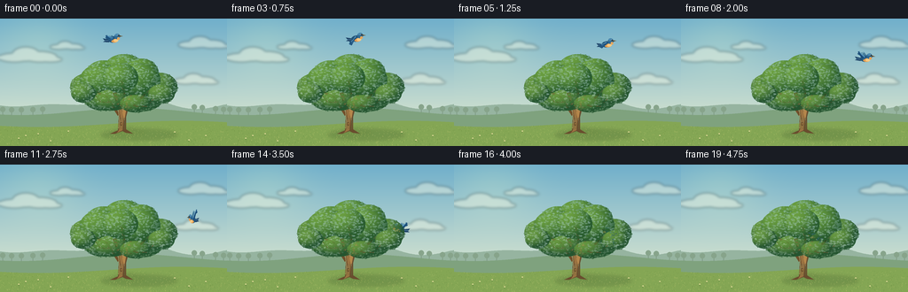
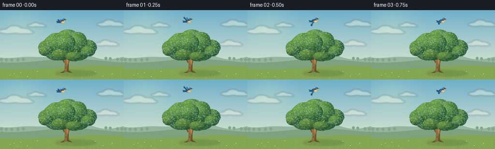

CODING AGENTS AS PIXEL WORLD MODELS
traex/GPT-6.1-Sol · dynamic_spatial_relationship_0047
点击播放 · 原生 RGB 像素
逐轮保存的候选
回放视频、检查图与代码变化。
每份候选均可单独播放。实际图片检查记录在下方工具轨迹中。
候选 01播放与检查图
点击播放 · 原生 RGB 像素


展开代码变化
--- 上一保存版本
+++ 本次保存版本
@@ -0,0 +1,191 @@
+"""Procedural RGB animation: a bluebird arcs from above an oak to behind it."""
+from pathlib import Path
+import math
+import numpy as np
+from PIL import Image, ImageDraw, ImageFilter
+import artifact_io
+
+ROOT = Path(__file__).resolve().parent
+W, H, S = 256, 144, 4
+rng = np.random.default_rng(4701)
+
+def poly(draw, points, fill):
+ draw.polygon([(round(x*S), round(y*S)) for x,y in points], fill=fill)
+
+def ellipse(draw, box, fill, outline=None, width=1):
+ draw.ellipse(tuple(round(z*S) for z in box), fill=fill, outline=outline, width=round(width*S))
+
+def line(draw, points, fill, width=1):
+ draw.line([(round(x*S),round(y*S)) for x,y in points], fill=fill, width=max(1,round(width*S)), joint='curve')
+
+def bezier(points, n=32):
+ p=np.array(points,float)
+ return [tuple((1-t)**3*p[0]+3*(1-t)**2*t*p[1]+3*(1-t)*t*t*p[2]+t**3*p[3]) for t in np.linspace(0,1,n)]
+
+def background():
+ yy,xx=np.mgrid[:H*S,:W*S].astype(float)
+ y=yy/S; x=xx/S
+ top=np.array([112,175,203.]); bottom=np.array([220,231,208.])
+ blend=np.clip(y/125,0,1)[...,None]
+ rgb=top*(1-blend)+bottom*blend
+ sun=np.exp(-((x-44)**2/2200+(y-25)**2/1500))[...,None]
+ rgb+=sun*np.array([19,13,0])
+ im=Image.fromarray(np.uint8(np.clip(rgb,0,255)))
+ clouds=Image.new('RGBA',im.size); d=ImageDraw.Draw(clouds)
+ for cx,cy,scale in [(32,42,1),(75,31,.55),(228,28,.8),(220,69,.7)]:
+ for dx,dy,rx,ry in [(-16,2,18,5),(-3,-2,15,8),(13,1,19,6),(25,4,13,3)]:
+ ellipse(d,(cx+(dx-rx)*scale,cy+(dy-ry)*scale,cx+(dx+rx)*scale,cy+(dy+ry)*scale),(250,250,228,100))
+ clouds=clouds.filter(ImageFilter.GaussianBlur(S*1.5)); im=Image.alpha_composite(im.convert('RGBA'),clouds)
+ d=ImageDraw.Draw(im)
+ # Far-away valley, softly desaturated to leave the action uncluttered.
+ pts=[(0,102)]+[(x,95+5*math.sin(x/30)+3*math.cos(x/17)) for x in range(257)]+[(256,144),(0,144)]
+ poly(d,pts,(150,180,160))
+ pts=[(0,113)]+[(x,105+4*math.sin(x/40+1)) for x in range(257)]+[(256,144),(0,144)]
+ poly(d,pts,(127,162,126))
+ # Sparse tiny trees on a distant ridge.
+ for x in [3,13,24,37,48,219,228,243,252]:
+ y=105+4*math.sin(x/40+1)
+ line(d,[(x,y),(x,y-6)],(124,153,129),.7)
+ ellipse(d,(x-3,y-9,x+3,y-3),(135,164,139))
+ pts=[(0,126)]+[(x,119+3.5*math.sin(x/51+.7)) for x in range(257)]+[(256,144),(0,144)]
+ poly(d,pts,(132,166,84))
+ # Meadow gradient.
+ ground=Image.new('RGBA',im.size); a=np.zeros((H*S,W*S,4),np.uint8)
+ bound=119+3.5*np.sin(x/51+.7)
+ m=y>=bound
+ c=np.stack([147-0.7*(y-119),177-0.8*(y-119),91-0.7*(y-119)],-1)
+ a[:,:,:3]=np.uint8(np.clip(c,0,255));a[:,:,3]=m*255
+ im=Image.alpha_composite(im,Image.fromarray(a))
+ # Cool tree shadow laid across the sunlit grass.
+ sh=Image.new('RGBA',im.size);sd=ImageDraw.Draw(sh)
+ ellipse(sd,(114,125,200,137),(53,81,41,54))
+ ellipse(sd,(128,124,164,133),(49,73,31,58))
+ sh=sh.filter(ImageFilter.GaussianBlur(S*2));im=Image.alpha_composite(im,sh)
+ d=ImageDraw.Draw(im)
+ for _ in range(1050):
+ gx=float(rng.uniform(0,W));gy=float(rng.uniform(120,144))
+ if gy <119+3.5*math.sin(gx/51+.7):continue
+ height=float(rng.uniform(.3,1.4))*(.5+(gy-120)/24)
+ color=[(109,145,66,110),(185,196,111,160),(111,147,71,130),(170,185,98,160)][int(rng.integers(4))]
+ line(d,[(gx,gy),(gx+float(rng.uniform(-.5,.5)),gy-height)],color,.25)
+ # Restrained foreground wildflowers.
+ for gx,gy in [(21,137),(29,134),(57,140),(77,129),(213,139),(232,134),(197,130),(43,132)]:
+ line(d,[(gx,gy),(gx,gy-2)],(100,136,65),.4)
+ ellipse(d,(gx-.7,gy-2.6,gx+.7,gy-1.5),(235,225,160))
+ return im
+
+def tree():
+ im=Image.new('RGBA',(W*S,H*S));d=ImageDraw.Draw(im)
+ # Organic silhouette of trunk, forked branches, exposed roots.
+ poly(d,[(133,126),(134,108),(132,98),(129,90),(127,84),(131,83),(136,96),(138,106),(143,91),(149,83),(152,84),(146,96),(142,111),(142,125),(150,130),(142,129),(138,127),(130,130),(124,130)],(105,77,46,255))
+ poly(d,[(134,126),(136,113),(134,100),(130,88),(132,88),(138,102),(139,116),(138,126),(132,129)],(154,114,65,255))
+ poly(d,[(138,106),(141,94),(145,89),(148,89),(143,98),(140,115)],(180,134,75,255))
+ for points,w in [([(134,109),(127,98),(120,88),(109,83)],2.9), ([(142,103),(153,97),(164,84),(175,79)],2.7), ([(137,100),(140,83),(137,70)],2.8), ([(126,95),(113,94),(107,86)],1.5), ([(147,99),(165,99),(173,91)],1.6)]:
+ line(d,points,(111,79,43,255),w)
+ for x0 in [135,137.5,140.5]:
+ line(d,[(x0,125),(x0+.5,119),(x0-.2,112)],(87,64,41,150),.45)
+ line(d,[(133.8,124),(134.6,115),(133.6,103)],(192,147,85,160),.65)
+ ellipse(d,(135.6,117,137.8,120.7),(103,74,42,255))
+ ellipse(d,(136.1,117.7,137.4,119.8),(151,110,63,255))
+ # Individual overlapping foliage masses; dimensional highlights from upper left.
+ clusters=[(117,62,20,15),(140,57,23,17),(159,62,20,17),(98,77,19,15),(180,77,20,16),
+ (116,86,24,18),(159,88,26,17),(140,78,29,23),(114,69,24,18),(156,69,25,19),
+ (94,84,14,11),(182,85,15,11),(126,92,20,12),(153,96,18,10),(136,67,20,17)]
+ foliage=Image.new('RGBA',im.size)
+ for ci,(cx,cy,rx,ry) in enumerate(clusters):
+ # Render local spherical shading with slightly textured pigment.
+ x0=int((cx-rx-2)*S);x1=int((cx+rx+2)*S)
+ y0=int((cy-ry-2)*S);y1=int((cy+ry+2)*S)
+ yy,xx=np.mgrid[y0:y1,x0:x1]
+ u=(xx/S-cx)/rx;v=(yy/S-cy)/ry
+ mask=(u*u+v*v)<=1
+ nz=np.sqrt(np.maximum(0,1-u*u-v*v))
+ lit=np.clip(-.43*u-.53*v+.58*nz,0,1)
+ base=np.array([38,86,49]);light=np.array([72,73,18])
+ if ci in [0,1,2,8,9,14]:base=base+np.array([5,8,-1])
+ noise=rng.normal(0,1.1,mask.shape)
+ arr=np.zeros((*mask.shape,4),np.uint8)
+ arr[:,:,:3]=np.uint8(np.clip(base+lit[...,None]*light+noise[...,None],0,255));arr[:,:,3]=mask*255
+ foliage.alpha_composite(Image.fromarray(arr),(x0,y0))
+ fd=ImageDraw.Draw(foliage)
+ # Leaf-scale structure carries highlights and gives the silhouette a natural edge.
+ for _ in range(int(rx*ry*.72)):
+ angle=float(rng.uniform(0,2*math.pi)); rr=math.sqrt(float(rng.uniform(0,1)))
+ ux=rr*math.cos(angle);uy=rr*math.sin(angle)
+ px=cx+ux*rx;py=cy+uy*ry
+ illum=max(0,min(1,-.43*ux-.53*uy+.58*math.sqrt(1-rr*rr)))
+ val=float(rng.uniform(-14,17))
+ cc=np.clip(base+illum*light+val,0,255).astype(int)
+ lw=float(rng.uniform(.5,1.5));lh=float(rng.uniform(.35,.9))
+ ellipse(fd,(px-lw,py-lh,px+lw,py+lh),tuple(cc)+(int(rng.uniform(125,235)),))
+ im=Image.alpha_composite(im,foliage)
+ return im
+
+def bird_layer(cx,cy,frame,face):
+ # Draw at high resolution in local coordinates; primary feathers move as a unit.
+ im=Image.new('RGBA',(W*S,H*S));d=ImageDraw.Draw(im)
+ flap=math.sin(2*math.pi*(frame*.29)+.4)
+ tilt=-.11 if frame<8 else (.13 if frame>11 else 0)
+ sx=face
+ def tx(p):
+ x,y=p; x*=sx
+ return (cx+x*math.cos(tilt)-y*math.sin(tilt),cy+x*math.sin(tilt)+y*math.cos(tilt))
+ def pg(points,c):poly(d,[tx(p) for p in points],c)
+ def ln(points,c,w):line(d,[tx(p) for p in points],c,w)
+ def el(box,c):
+ # Small ellipses transformed as smooth polygon contours.
+ x0,y0,x1,y1=box
+ pg([((x0+x1)/2+(x1-x0)/2*math.cos(t),(y0+y1)/2+(y1-y0)/2*math.sin(t)) for t in np.linspace(0,2*math.pi,36)],c)
+ wy=-10.0*flap-1.5
+ # Opposite wing, slightly farther from the camera.
+ pg([(-3,-1),(-6,wy*.7),(-2,wy*.9),(3,-1)],(71,126,155,255))
+ ln([(-3,0),(-4,wy*.65),(-2,wy*.86)],(123,174,194,255),.65)
+ # Three tapering tail feathers.
+ pg([(-4,0),(-12,-2),(-10,1),(-12,2),(-6,3),(-3,2)],(32,69,105,255))
+ ln([(-10,.3),(-5,1.1)],(88,141,175,255),.7)
+ el((-6,-3,5,4),(33,83,121,255))
+ el((-3,0,5,4),(225,158,84,255))
+ el((0,.3,5,3.5),(246,202,132,255))
+ # Near wing, fanned with scalloped primary-feather tips.
+ wing=[(2,-1),(-1,-3),(-4,wy*.5),(-7,wy),(-8.5,wy+.5),(-8.1,wy+2),(-9.1,wy+2.6),(-8.6,wy+3.8),(-7.8,wy+4.2),(-6.3,wy+5),(-3,2)]
+ pg(wing,(34,87,129,255))
+ pg([(-.5,-1.8),(-3.7,wy*.5),(-6.8,wy+.8),(-5.8,wy+2.8),(-2.2,.9)],(61,125,171,255))
+ for k in range(3):
+ ln([(-2.5+k*.5,0),(-7.7+k*.9,wy+1.8+k)],(21,65,107,255),.38)
+ ln([(-1,-2),(-4,wy*.55),(-6.7,wy+.8)],(112,171,199,255),.55)
+ # Distinct head, warm throat, black eye with a tiny catchlight and pointed beak.
+ el((1.2,-5.7,7.4,.7),(47,105,146,255))
+ el((2,-5.5,6.4,-3),(75,138,178,255))
+ el((4,-1.5,7,1.5),(225,166,96,255))
+ pg([(6.8,-3.5),(10.6,-2.2),(6.9,-1.7)],(67,59,44,255))
+ ln([(7,-2.5),(10,-2.3)],(178,150,87,255),.32)
+ el((5.1,-4.1,6.35,-2.85),(15,27,30,255))
+ el((5.25,-3.96,5.65,-3.57),(242,251,244,255))
+ return im
+
+def catmull(t,keys):
+ j=max(0,min(len(keys)-2,next((i-1 for i,k in enumerate(keys) if k[0]>t),len(keys)-2)))
+ t0,x0,y0=keys[j];t1,x1,y1=keys[j+1]
+ prev=keys[max(0,j-1)];nxt=keys[min(len(keys)-1,j+2)]
+ u=(t-t0)/(t1-t0)
+ p0=np.array([x0,y0]);p1=np.array([x1,y1])
+ v0=(p1-np.array(prev[1:]))/(t1-prev[0])*(t1-t0)
+ v1=(np.array(nxt[1:])-p0)/(nxt[0]-t0)*(t1-t0)
+ return (2*u**3-3*u*u+1)*p0+(u**3-2*u*u+u)*v0+(-2*u**3+3*u*u)*p1+(u**3-u*u)*v1
+
+def main():
+ bg=background();oak=tree();frames=[]
+ keys=[(0,128,23),(3,146,22),(6,186,33),(9,216,51),(11,217,62),(13,203,70),(16,175,77),(19,150,80)]
+ for i in range(20):
+ cx,cy=catmull(i,keys)
+ # A gradual foreshortened turn, rather than changing identity or teleporting.
+ face=1 if i<=9 else (.6 if i==10 else (-.6 if i==11 else -1))
+ canvas=Image.alpha_composite(bg,bird_layer(cx,cy,i,face))
+ # The bird is on the far side: actual canopy alpha occludes it progressively.
+ sway=.22*math.sin(i*.24)
+ moving=oak.rotate(sway,resample=Image.Resampling.BICUBIC,center=(138*S,126*S))
+ canvas=Image.alpha_composite(canvas,moving)
+ frames.append(np.asarray(canvas.convert('RGB').resize((W,H),Image.Resampling.LANCZOS),dtype=np.uint8))
+ artifact_io.save(np.stack(frames),ROOT)
+
+if __name__=='__main__':main()
可观测工具轨迹
实际执行的命令与返回图片。
命令 1exit 0
/bin/bash -lc 'ls -la && cat prompt.txt && cat GENERATION_RULES.md && cat task_spec.json'
命令 2exit 0
/bin/bash -lc "cat artifact_io.py && python - <<'PY'
import PIL, numpy
print('PIL', PIL.__version__)
PY"命令 3exit 0
/bin/bash -lc "cat > generate.py <<'PY'
\"\"\"Procedural RGB animation: a bluebird arcs from above an oak to behind it.\"\"\"
from pathlib import Path
import math
import numpy as np
from PIL import Image, ImageDraw, ImageFilter
import artifact_io
ROOT = Path(__file__).resolve().parent
W, H, S = 256, 144, 4
rng = np.random.default_rng(4701)
def poly(draw, points, fill):
draw.polygon([(round(x*S), round(y*S)) for x,y in points], fill=fill)
def ellipse(draw, box, fill, outline=None, width=1):
draw.ellipse(tuple(round(z*S) for z in box), fill=fill, outline=outline, width=round(width*S))
def line(draw, points, fill, width=1):
draw.line([(round(x*S),round(y*S)) for x,y in points], fill=fill, width=max(1,round(width*S)), joint='curve')
def bezier(points, n=32):
p=np.array(points,float)
return [tuple((1-t)**3*p[0]+3*(1-t)**2*t*p[1]+3*(1-t)*t*t*p[2]+t**3*p[3]) for t in np.linspace(0,1,n)]
def background():
yy,xx=np.mgrid[:H*S,:W*S].astype(float)
y=yy/S; x=xx/S
top=np.array([112,175,203.]); bottom=np.array([220,231,208.])
blend=np.clip(y/125,0,1)[...,None]
rgb=top*(1-blend)+bottom*blend
sun=np.exp(-((x-44)**2/2200+(y-25)**2/1500))[...,None]
rgb+=sun*np.array([19,13,0])
im=Image.fromarray(np.uint8(np.clip(rgb,0,255)))
clouds=Image.new('RGBA',im.size); d=ImageDraw.Draw(clouds)
for cx,cy,scale in [(32,42,1),(75,31,.55),(228,28,.8),(220,69,.7)]:
for dx,dy,rx,ry in [(-16,2,18,5),(-3,-2,15,8),(13,1,19,6),(25,4,13,3)]:
ellipse(d,(cx+(dx-rx)*scale,cy+(dy-ry)*scale,cx+(dx+rx)*scale,cy+(dy+ry)*scale),(250,250,228,100))
clouds=clouds.filter(ImageFilter.GaussianBlur(S*1.5)); im=Image.alpha_composite(im.convert('RGBA'),clouds)
d=ImageDraw.Draw(im)
# Far-away valley, softly desaturated to leave the action uncluttered.
pts=[(0,102)]+[(x,95+5*math.sin(x/30)+3*math.cos(x/17)) for x in range(257)]+[(256,144),(0,144)]
poly(d,pts,(150,180,160))
pts=[(0,113)]+[(x,105+4*math.sin(x/40+1)) for x in range(257)]+[(256,144),(0,144)]
poly(d,pts,(127,162,126))
# Sparse tiny trees on a distant ridge.
for x in [3,13,24,37,48,219,228,243,252]:
y=105+4*math.sin(x/40+1)
line(d,[(x,y),(x,y-6)],(124,153,129),.7)
ellipse(d,(x-3,y-9,x+3,y-3),(135,164,139))
pts=[(0,126)]+[(x,119+3.5*math.sin(x/51+.7)) for x in range(257)]+[(256,144),(0,144)]
poly(d,pts,(132,166,84))
# Meadow gradient.
ground=Image.new('RGBA',im.size); a=np.zeros((H*S,W*S,4),np.uint8)
bound=119+3.5*np.sin(x/51+.7)
m=y>=bound
c=np.stack([147-0.7*(y-119),177-0.8*(y-119),91-0.7*(y-119)],-1)
a[:,:,:3]=np.uint8(np.clip(c,0,255));a[:,:,3]=m*255
im=Image.alpha_composite(im,Image.fromarray(a))
# Cool tree shadow laid across the sunlit grass.
sh=Image.new('RGBA',im.size);sd=ImageDraw.Draw(sh)
ellipse(sd,(114,125,200,137),(53,81,41,54))
ellipse(sd,(128,124,164,133),(49,73,31,58))
sh=sh.filter(ImageFilter.GaussianBlur(S*2));im=Image.alpha_composite(im,sh)
d=ImageDraw.Draw(im)
for _ in range(1050):
gx=float(rng.uniform(0,W));gy=float(rng.uniform(120,144))
if gy <119+3.5*math.sin(gx/51+.7):continue
height=float(rng.uniform(.3,1.4))*(.5+(gy-120)/24)
color=[(109,145,66,110),(185,196,111,160),(111,147,71,130),(170,185,98,160)][int(rng.integers(4))]
line(d,[(gx,gy),(gx+float(rng.uniform(-.5,.5)),gy-height)],color,.25)
# Restrained foreground wildflowers.
for gx,gy in [(21,137),(29,134),(57,140),(77,129),(213,139),(232,134),(197,130),(43,132)]:
line(d,[(gx,gy),(gx,gy-2)],(100,136,65),.4)
ellipse(d,(gx-.7,gy-2.6,gx+.7,gy-1.5),(235,225,160))
return im
def tree():
im=Image.new('RGBA',(W*S,H*S));d=ImageDraw.Draw(im)
# Organic silhouette of trunk, forked branches, exposed roots.
poly(d,[(133,126),(134,108),(132,98),(129,90),(127,84),(131,83),(136,96),(138,106),(143,91),(149,83),(152,84),(146,96),(142,111),(142,125),(150,130),(142,129),(138,127),(130,130),(124,130)],(105,77,46,255))
poly(d,[(134,126),(136,113),(134,100),(130,88),(132,88),(138,102),(139,116),(138,126),(132,129)],(154,114,65,255))
poly(d,[(138,106),(141,94),(145,89),(148,89),(143,98),(140,115)],(180,134,75,255))
for points,w in [([(134,109),(127,98),(120,88),(109,83)],2.9), ([(142,103),(153,97),(164,84),(175,79)],2.7), ([(137,100),(140,83),(137,70)],2.8), ([(126,95),(113,94),(107,86)],1.5), ([(147,99),(165,99),(173,91)],1.6)]:
line(d,points,(111,79,43,255),w)
for x0 in [135,137.5,140.5]:
line(d,[(x0,125),(x0+.5,119),(x0-.2,112)],(87,64,41,150),.45)
line(d,[(133.8,124),(134.6,115),(133.6,103)],(192,147,85,160),.65)
ellipse(d,(135.6,117,137.8,120.7),(103,74,42,255))
ellipse(d,(136.1,117.7,137.4,119.8),(151,110,63,255))
# Individual overlapping foliage masses; dimensional highlights from upper left.
clusters=[(117,62,20,15),(140,57,23,17),(159,62,20,17),(98,77,19,15),(180,77,20,16),
(116,86,24,18),(159,88,26,17),(140,78,29,23),(114,69,24,18),(156,69,25,19),
(94,84,14,11),(182,85,15,11),(126,92,20,12),(153,96,18,10),(136,67,20,17)]
foliage=Image.new('RGBA',im.size)
for ci,(cx,cy,rx,ry) in enumerate(clusters):
# Render local spherical shading with slightly textured pigment.
x0=int((cx-rx-2)*S);x1=int((cx+rx+2)*S)
y0=int((cy-ry-2)*S);y1=int((cy+ry+2)*S)
yy,xx=np.mgrid[y0:y1,x0:x1]
u=(xx/S-cx)/rx;v=(yy/S-cy)/ry
mask=(u*u+v*v)<=1
nz=np.sqrt(np.maximum(0,1-u*u-v*v))
lit=np.clip(-.43*u-.53*v+.58*nz,0,1)
base=np.array([38,86,49]);light=np.array([72,73,18])
if ci in [0,1,2,8,9,14]:base=base+np.array([5,8,-1])
noise=rng.normal(0,1.1,mask.shape)
arr=np.zeros((*mask.shape,4),np.uint8)
arr[:,:,:3]=np.uint8(np.clip(base+lit[...,None]*light+noise[...,None],0,255));arr[:,:,3]=mask*255
foliage.alpha_composite(Image.fromarray(arr),(x0,y0))
fd=ImageDraw.Draw(foliage)
# Leaf-scale structure carries highlights and gives the silhouette a natural edge.
for _ in range(int(rx*ry*.72)):
angle=float(rng.uniform(0,2*math.pi)); rr=math.sqrt(float(rng.uniform(0,1)))
ux=rr*math.cos(angle);uy=rr*math.sin(angle)
px=cx+ux*rx;py=cy+uy*ry
illum=max(0,min(1,-.43*ux-.53*uy+.58*math.sqrt(1-rr*rr)))
val=float(rng.uniform(-14,17))
cc=np.clip(base+illum*light+val,0,255).astype(int)
lw=float(rng.uniform(.5,1.5));lh=float(rng.uniform(.35,.9))
ellipse(fd,(px-lw,py-lh,px+lw,py+lh),tuple(cc)+(int(rng.uniform(125,235)),))
im=Image.alpha_composite(im,foliage)
return im
def bird_layer(cx,cy,frame,face):
# Draw at high resolution in local coordinates; primary feathers move as a unit.
im=Image.new('RGBA',(W*S,H*S));d=ImageDraw.Draw(im)
flap=math.sin(2*math.pi*(frame*.29)+.4)
tilt=-.11 if frame<8 else (.13 if frame>11 else 0)
sx=face
def tx(p):
x,y=p; x*=sx
return (cx+x*math.cos(tilt)-y*math.sin(tilt),cy+x*math.sin(tilt)+y*math.cos(tilt))
def pg(points,c):poly(d,[tx(p) for p in points],c)
def ln(points,c,w):line(d,[tx(p) for p in points],c,w)
def el(box,c):
# Small ellipses transformed as smooth polygon contours.
x0,y0,x1,y1=box
pg([((x0+x1)/2+(x1-x0)/2*math.cos(t),(y0+y1)/2+(y1-y0)/2*math.sin(t)) for t in np.linspace(0,2*math.pi,36)],c)
wy=-10.0*flap-1.5
# Opposite wing, slightly farther from the camera.
pg([(-3,-1),(-6,wy*.7),(-2,wy*.9),(3,-1)],(71,126,155,255))
ln([(-3,0),(-4,wy*.65),(-2,wy*.86)],(123,174,194,255),.65)
# Three tapering tail feathers.
pg([(-4,0),(-12,-2),(-10,1),(-12,2),(-6,3),(-3,2)],(32,69,105,255))
ln([(-10,.3),(-5,1.1)],(88,141,175,255),.7)
el((-6,-3,5,4),(33,83,121,255))
el((-3,0,5,4),(225,158,84,255))
el((0,.3,5,3.5),(246,202,132,255))
# Near wing, fanned with scalloped primary-feather tips.
wing=[(2,-1),(-1,-3),(-4,wy*.5),(-7,wy),(-8.5,wy+.5),(-8.1,wy+2),(-9.1,wy+2.6),(-8.6,wy+3.8),(-7.8,wy+4.2),(-6.3,wy+5),(-3,2)]
pg(wing,(34,87,129,255))
pg([(-.5,-1.8),(-3.7,wy*.5),(-6.8,wy+.8),(-5.8,wy+2.8),(-2.2,.9)],(61,125,171,255))
for k in range(3):
ln([(-2.5+k*.5,0),(-7.7+k*.9,wy+1.8+k)],(21,65,107,255),.38)
ln([(-1,-2),(-4,wy*.55),(-6.7,wy+.8)],(112,171,199,255),.55)
# Distinct head, warm throat, black eye with a tiny catchlight and pointed beak.
el((1.2,-5.7,7.4,.7),(47,105,146,255))
el((2,-5.5,6.4,-3),(75,138,178,255))
el((4,-1.5,7,1.5),(225,166,96,255))
pg([(6.8,-3.5),(10.6,-2.2),(6.9,-1.7)],(67,59,44,255))
ln([(7,-2.5),(10,-2.3)],(178,150,87,255),.32)
el((5.1,-4.1,6.35,-2.85),(15,27,30,255))
el((5.25,-3.96,5.65,-3.57),(242,251,244,255))
return im
def catmull(t,keys):
j=max(0,min(len(keys)-2,next((i-1 for i,k in enumerate(keys) if k[0]>t),len(keys)-2)))
t0,x0,y0=keys[j];t1,x1,y1=keys[j+1]
prev=keys[max(0,j-1)];nxt=keys[min(len(keys)-1,j+2)]
u=(t-t0)/(t1-t0)
p0=np.array([x0,y0]);p1=np.array([x1,y1])
v0=(p1-np.array(prev[1:]))/(t1-prev[0])*(t1-t0)
v1=(np.array(nxt[1:])-p0)/(nxt[0]-t0)*(t1-t0)
return (2*u**3-3*u*u+1)*p0+(u**3-2*u*u+u)*v0+(-2*u**3+3*u*u)*p1+(u**3-u*u)*v1
def main():
bg=background();oak=tree();frames=[]
keys=[(0,128,23),(3,146,22),(6,186,33),(9,216,51),(11,217,62),(13,203,70),(16,175,77),(19,150,80)]
for i in range(20):
cx,cy=catmull(i,keys)
# A gradual foreshortened turn, rather than changing identity or teleporting.
face=1 if i<=9 else (.6 if i==10 else (-.6 if i==11 else -1))
canvas=Image.alpha_composite(bg,bird_layer(cx,cy,i,face))
# The bird is on the far side: actual canopy alpha occludes it progressively.
sway=.22*math.sin(i*.24)
moving=oak.rotate(sway,resample=Image.Resampling.BICUBIC,center=(138*S,126*S))
canvas=Image.alpha_composite(canvas,moving)
frames.append(np.asarray(canvas.convert('RGB').resize((W,H),Image.Resampling.LANCZOS),dtype=np.uint8))
artifact_io.save(np.stack(frames),ROOT)
if __name__=='__main__':main()
PY
python generate.py
ls -lh pixels.npz index.html inspection.png frames/00.png"命令 4exit 0
/bin/bash -lc "python - <<'PY'
from pathlib import Path
import numpy as np
from PIL import Image
p=Path('.')
f=sorted((p/'frames').glob('*.png'))
assert len(f)==20
for name in f:
im=Image.open(name)
assert im.size==(256,144) and im.mode=='RGB'
a=np.load('pixels.npz')['pixels']
assert a.shape==(144,256,20)
print('Verified: 20 RGB frames, 256Ã144, 4 fps / 5 seconds; output artifacts present.')
PY"保存候选 1 份；完成命令 4 次；可验证图片返回 0 张。原始 API 响应与完整日志保留在本地。